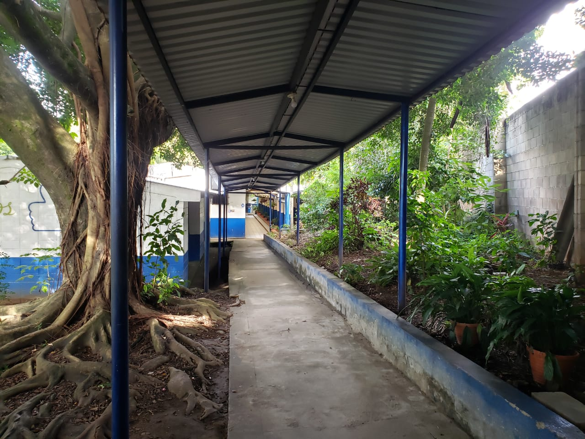

Historia de la institución

El Instituto Nacional de Ilobasco (INDI) actualmente se encuentra ubicado sobre la calle que conduce a la Presa Hidroeléctrica 5 de Noviembre. Dicha institución inicio labores en las instalaciones que ocupa hoy en día la Parvularía Gabriela Mistral ubicado en la 5ta Calle Oriente y avenida Carlos Bonilla contiguo a Casa de la Cultura de Ilobasco, bajo el nombre de Bachillerato Diversificado con servicios de Orientación académica, ofreciendo una diversidad de modalidades de bachilleratos tales como humanidades, ciencias comerciales y ciencias sociales.